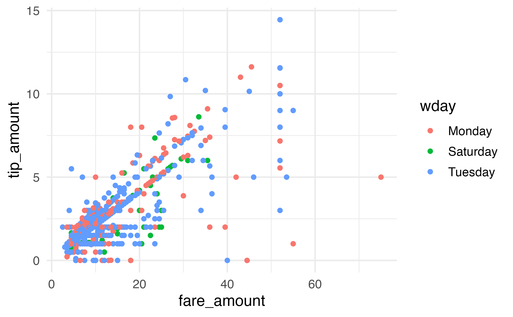

library(mdsr)
con_taxi <- DBI::dbConnect(
RMariaDB::MariaDB(),
dbname = "nyctaxi",
host = Sys.getenv("MDSR_HOST"),
user = Sys.getenv("MDSR_USER"),
password = Sys.getenv("MDSR_PWD")
)3 SQL clauses
Most of this chapter will focus on the SQL commands needed to run queries of the database. Much of the syntax is strikingly familiar to tidy verbs in R. However, this chapter starts with a few SQL specific tools used to learn about the tables in any particular database.
3.1 Looking at the tables in the database
Consider a database of taxi rides from the Yellow Cab company in NYC in March of 2014.
SHOW TABLES;| Tables_in_nyctaxi |
|---|
| yellow_old |
There is only one table in the nyctaxi database, called yellow_old.
DESCRIBE yellow_old;| Field | Type | Null | Key | Default | Extra |
|---|---|---|---|---|---|
| vendor_id | text | YES | |||
| pickup_datetime | text | YES | |||
| dropoff_datetime | text | YES | |||
| passenger_count | bigint(20) | YES | |||
| trip_distance | double | YES | |||
| pickup_longitude | double | YES | |||
| pickup_latitude | double | YES | |||
| rate_code | bigint(20) | YES | |||
| store_and_fwd_flag | text | YES | |||
| dropoff_longitude | double | YES | |||
| dropoff_latitude | double | YES | |||
| payment_type | text | YES | |||
| fare_amount | double | YES | |||
| surcharge | double | YES | |||
| mta_tax | double | YES | |||
| tip_amount | double | YES | |||
| tolls_amount | double | YES | |||
| total_amount | double | YES |
Similarly, the DESCRIBE command shows the 18 field names (variables) in the yellow_old table. Some of the variables are characters (text) and some are numeric (either double or bigint)
Most engagements with SQL are done through queries. Queries in SQL start with the SELECT keyword and consist of several clauses, which must be written in the following order:1
-
SELECTallows you to list the columns, or functions operating on columns, that you want to retrieve. This is an analogous operation to theselect()verb in dplyr, potentially combined withmutate()orsummarize(). -
FROMspecifies the table where the data are. -
JOINallows you to stitch together two or more tables using a key. This is analogous to theinner_join()andleft_join()commands in dplyr. More details ofJOINare given in Chapter 4. -
WHEREallows you to filter the records according to some criteria and is an analogous operation to thefilter()verb in dplyr. Note, even though theWHEREclause is written afterSELECTandJOIN, it is actually evaluated before theSELECTorJOINclauses (which is whyWHEREonly works on the original data, not the results set). -
GROUP BYallows you to aggregate the records according to some shared value and is an analogous operation to thegroup_by()verb in dplyr. -
HAVINGis like aWHEREclause that operates on the result set—not the records themselves and is analogous to applying a secondfilter()command in dplyr, after the rows have already been aggregated. -
ORDER BYis exactly what it sounds like—it specifies a condition for ordering the rows of the result set and is analogous to thearrange()verb in dplyr. -
LIMITrestricts the number of rows in the output and is similar to the R commandshead()andslice().
3.2 SELECT … FROM
A SQL query starts with a SELECT command and has a corresponding FROM to indicate the table being queried. Columns may be specified, or the * will indicate that every column in the table should be returned.
The shortest SQL query is the following SELECT command. Do not run this command!!! The yellow_old table has 15 million rows, and we do not want to look at them simultaneously.
DO NOT RUN: SELECT * FROM yellow_old;Instead, to look at the top of the table, SELECT the first few rows. The LIMIT command specifies which rows to select: the first number is the number of rows to skip (0 rows skipped), the second number is the number of rows to print up to (up to row 14).
SELECT * FROM yellow_old LIMIT 0, 14;| vendor_id | pickup_datetime | dropoff_datetime | passenger_count | trip_distance | pickup_longitude | pickup_latitude | rate_code | store_and_fwd_flag | dropoff_longitude | dropoff_latitude | payment_type | fare_amount | surcharge | mta_tax | tip_amount | tolls_amount | total_amount |
|---|---|---|---|---|---|---|---|---|---|---|---|---|---|---|---|---|---|
| CMT | 2014-03-01 01:07:38 | 2014-03-01 01:16:26 | 1 | 2.0 | -74.0 | 40.7 | 1 | N | -73.9 | 40.7 | CRD | 9.0 | 0.5 | 0.5 | 2.0 | 0 | 12.0 |
| CMT | 2014-03-01 01:08:03 | 2014-03-01 01:12:51 | 2 | 1.2 | -74.0 | 40.7 | 1 | N | -74.0 | 40.7 | CRD | 6.0 | 0.5 | 0.5 | 1.0 | 0 | 8.0 |
| CMT | 2014-03-01 01:08:51 | 2014-03-01 01:13:18 | 3 | 0.5 | -73.9 | 40.7 | 1 | N | -74.0 | 40.7 | CRD | 5.0 | 0.5 | 0.5 | 1.2 | 0 | 7.2 |
| CMT | 2014-03-01 01:09:20 | 2014-03-01 01:24:18 | 3 | 3.5 | -74.0 | 40.7 | 1 | N | -74.0 | 40.8 | CRD | 14.0 | 0.5 | 0.5 | 3.0 | 0 | 18.0 |
| CMT | 2014-03-01 01:09:46 | 2014-03-01 01:22:34 | 1 | 1.8 | -74.0 | 40.7 | 1 | N | -74.0 | 40.7 | CRD | 10.5 | 0.5 | 0.5 | 1.0 | 0 | 12.5 |
| CMT | 2014-03-01 01:12:41 | 2014-03-01 01:15:38 | 1 | 0.5 | -74.0 | 40.7 | 1 | N | -74.0 | 40.7 | CRD | 4.0 | 0.5 | 0.5 | 0.5 | 0 | 5.5 |
| CMT | 2014-03-01 01:12:11 | 2014-03-01 01:27:38 | 2 | 3.7 | -74.0 | 40.8 | 1 | N | -74.0 | 40.7 | CRD | 14.5 | 0.5 | 0.5 | 3.1 | 0 | 18.6 |
| CMT | 2014-03-01 01:13:55 | 2014-03-01 01:34:54 | 1 | 5.4 | -74.0 | 40.8 | 1 | N | -74.0 | 40.7 | CRD | 20.0 | 0.5 | 0.5 | 3.0 | 0 | 24.0 |
| CMT | 2014-03-01 01:14:06 | 2014-03-01 01:28:25 | 1 | 3.5 | -74.0 | 40.7 | 1 | N | -74.0 | 40.8 | CRD | 13.5 | 0.5 | 0.5 | 2.9 | 0 | 17.4 |
| CMT | 2014-03-01 01:13:10 | 2014-03-01 01:38:54 | 3 | 5.9 | -74.0 | 40.8 | 1 | N | -74.0 | 40.7 | CRD | 21.5 | 0.5 | 0.5 | 2.0 | 0 | 24.5 |
| CMT | 2014-03-01 01:14:13 | 2014-03-01 01:25:49 | 1 | 1.9 | -74.0 | 40.8 | 1 | N | -74.0 | 40.8 | CRD | 10.0 | 0.5 | 0.5 | 2.2 | 0 | 13.2 |
| CMT | 2014-03-01 01:15:22 | 2014-03-01 01:30:04 | 3 | 3.2 | -74.0 | 40.7 | 1 | N | -74.0 | 40.7 | CRD | 13.0 | 0.5 | 0.5 | 2.8 | 0 | 16.8 |
| CMT | 2014-03-01 01:16:28 | 2014-03-01 01:28:05 | 1 | 2.8 | -74.0 | 40.7 | 1 | N | -74.0 | 40.7 | CRD | 11.0 | 0.5 | 0.5 | 1.5 | 0 | 13.5 |
Speaking of which, how many rows are there in the yellow_old table? That is, how many taxi rides are recorded? Now SELECT is used with a summary function, COUNT(). Instead of using a separate summary function (like mutate() or summarize()), all the work is done inside the SELECT call.
SELECT COUNT(*) FROM yellow_old;| COUNT(*) |
|---|
| 15428128 |
Yikes, more than 15 million taxi rides!!!!
You might have noticed that the yellow_old table has two different datetime variables (one for pickup, the other for drop-off). We can use the information to assess the length of each ride (in time, not distance). However, the variables are stored in SQL as character strings instead of in a DateTime format (even though they look like they are stored in a DateTime format!), see Table 3.2. Fortunately for us, SQL has functionality to convert a text Type into DateTime type (POSIXct is a special type of DateTime formatting).
SELECT
pickup_datetime, dropoff_datetime,
STR_TO_DATE(pickup_datetime, "%Y-%m-%d %T") AS pickup,
STR_TO_DATE(dropoff_datetime, "%Y-%m-%d %T") AS dropoff
FROM yellow_old
LIMIT 0, 10;| pickup_datetime | dropoff_datetime | pickup | dropoff |
|---|---|---|---|
| 2014-03-01 01:07:38 | 2014-03-01 01:16:26 | 2014-03-01 01:07:38 | 2014-03-01 01:16:26 |
| 2014-03-01 01:08:03 | 2014-03-01 01:12:51 | 2014-03-01 01:08:03 | 2014-03-01 01:12:51 |
| 2014-03-01 01:08:51 | 2014-03-01 01:13:18 | 2014-03-01 01:08:51 | 2014-03-01 01:13:18 |
| 2014-03-01 01:09:20 | 2014-03-01 01:24:18 | 2014-03-01 01:09:20 | 2014-03-01 01:24:18 |
| 2014-03-01 01:09:46 | 2014-03-01 01:22:34 | 2014-03-01 01:09:46 | 2014-03-01 01:22:34 |
| 2014-03-01 01:12:41 | 2014-03-01 01:15:38 | 2014-03-01 01:12:41 | 2014-03-01 01:15:38 |
| 2014-03-01 01:12:11 | 2014-03-01 01:27:38 | 2014-03-01 01:12:11 | 2014-03-01 01:27:38 |
| 2014-03-01 01:13:55 | 2014-03-01 01:34:54 | 2014-03-01 01:13:55 | 2014-03-01 01:34:54 |
| 2014-03-01 01:14:06 | 2014-03-01 01:28:25 | 2014-03-01 01:14:06 | 2014-03-01 01:28:25 |
Now that the variables are no longer strings, we can subtract them to figure out the number of minutes for each taxi ride. Unfortunately, the following code won’t run because neither of the variables pickup or dropoff are in the table yellow_old.
SELECT
pickup_datetime, dropoff_datetime,
STR_TO_DATE(pickup_datetime, "%Y-%m-%d %T") AS pickup,
STR_TO_DATE(dropoff_datetime, "%Y-%m-%d %T") AS dropoff.
TIMEDIFF(pickup, dropoff) AS length_time
FROM yellow_old
LIMIT 0, 10;Instead, we need two layers of SELECT commands so that the first SELECT (i.e., inside) layer creates the new variables, and the second SELECT (i.e., outside) layer subtracts the two times.
SELECT
pickup,
dropoff,
TIMEDIFF(pickup, dropoff) AS length_time
FROM (
SELECT
STR_TO_DATE(pickup_datetime, "%Y-%m-%d %T") AS pickup,
STR_TO_DATE(dropoff_datetime, "%Y-%m-%d %T") AS dropoff
FROM yellow_old)
AS subquery_table
LIMIT 0, 20;| pickup | dropoff | length_time |
|---|---|---|
| 2014-03-01 01:07:38 | 2014-03-01 01:16:26 | 00:08:48 |
| 2014-03-01 01:08:03 | 2014-03-01 01:12:51 | 00:04:48 |
| 2014-03-01 01:08:51 | 2014-03-01 01:13:18 | 00:04:27 |
| 2014-03-01 01:09:20 | 2014-03-01 01:24:18 | 00:14:58 |
| 2014-03-01 01:09:46 | 2014-03-01 01:22:34 | 00:12:48 |
| 2014-03-01 01:12:41 | 2014-03-01 01:15:38 | 00:02:57 |
| 2014-03-01 01:12:11 | 2014-03-01 01:27:38 | 00:15:27 |
| 2014-03-01 01:13:55 | 2014-03-01 01:34:54 | 00:20:59 |
| 2014-03-01 01:14:06 | 2014-03-01 01:28:25 | 00:14:19 |
| 2014-03-01 01:13:10 | 2014-03-01 01:38:54 | 00:25:44 |
| 2014-03-01 01:14:13 | 2014-03-01 01:25:49 | 00:11:36 |
| 2014-03-01 01:15:22 | 2014-03-01 01:30:04 | 00:14:42 |
| 2014-03-01 01:16:28 | 2014-03-01 01:28:05 | 00:11:37 |
| 2014-03-01 01:25:34 | 2014-03-01 02:01:03 | 00:35:29 |
| 2014-03-01 01:26:39 | 2014-03-01 01:30:03 | 00:03:24 |
| 2014-03-01 01:27:16 | 2014-03-01 01:46:59 | 00:19:43 |
| 2014-03-01 01:28:39 | 2014-03-01 01:30:53 | 00:02:14 |
| 2014-03-01 01:29:40 | 2014-03-01 01:35:01 | 00:05:21 |
| 2014-03-01 01:28:51 | 2014-03-01 01:43:06 | 00:14:15 |
Alternatively, the STR_TO_DATE() function can be applied inside the TIMEDIFF() function so that the full (now only) SELECT command is being used only on variables that are in the original table.
SELECT
pickup_datetime,
dropoff_datetime,
TIMEDIFF(STR_TO_DATE(pickup_datetime, "%Y-%m-%d %T"),
STR_TO_DATE(dropoff_datetime, "%Y-%m-%d %T")) AS length_time
FROM yellow_old
LIMIT 0, 20;| pickup_datetime | dropoff_datetime | length_time |
|---|---|---|
| 2014-03-01 01:07:38 | 2014-03-01 01:16:26 | 00:08:48 |
| 2014-03-01 01:08:03 | 2014-03-01 01:12:51 | 00:04:48 |
| 2014-03-01 01:08:51 | 2014-03-01 01:13:18 | 00:04:27 |
| 2014-03-01 01:09:20 | 2014-03-01 01:24:18 | 00:14:58 |
| 2014-03-01 01:09:46 | 2014-03-01 01:22:34 | 00:12:48 |
| 2014-03-01 01:12:41 | 2014-03-01 01:15:38 | 00:02:57 |
| 2014-03-01 01:12:11 | 2014-03-01 01:27:38 | 00:15:27 |
| 2014-03-01 01:13:55 | 2014-03-01 01:34:54 | 00:20:59 |
| 2014-03-01 01:14:06 | 2014-03-01 01:28:25 | 00:14:19 |
| 2014-03-01 01:13:10 | 2014-03-01 01:38:54 | 00:25:44 |
| 2014-03-01 01:14:13 | 2014-03-01 01:25:49 | 00:11:36 |
| 2014-03-01 01:15:22 | 2014-03-01 01:30:04 | 00:14:42 |
| 2014-03-01 01:16:28 | 2014-03-01 01:28:05 | 00:11:37 |
| 2014-03-01 01:25:34 | 2014-03-01 02:01:03 | 00:35:29 |
| 2014-03-01 01:26:39 | 2014-03-01 01:30:03 | 00:03:24 |
| 2014-03-01 01:27:16 | 2014-03-01 01:46:59 | 00:19:43 |
| 2014-03-01 01:28:39 | 2014-03-01 01:30:53 | 00:02:14 |
| 2014-03-01 01:29:40 | 2014-03-01 01:35:01 | 00:05:21 |
| 2014-03-01 01:28:51 | 2014-03-01 01:43:06 | 00:14:15 |
Keep in mind that there is a distinction between clauses that operate on the variables of the original table versus those that operate on the variables of the results set. The variables pickup_datetime and dropoff_datetime are columns in the original table - they are written to disk on the SQL server. The variables pickup, dropoff, and length_time exist only in the results set, which is passed from the server (SQL server) to the client (e.g., RStudio or DBeaver) and is not written to disk.
3.3 SELECT DISTINCT
SELECT DISTINCT returns only unique rows. That is, it filters out all the duplicates of a variable or a combination of variables. Note that I have a larger limit on the query that I needed, just to make sure I got all the levels.
SELECT DISTINCT payment_type
FROM yellow_old
LIMIT 0, 20;| payment_type |
|---|
| CRD |
| CSH |
| NOC |
| DIS |
| UNK |
SELECT DISTINCT vendor_id, payment_type
FROM yellow_old
LIMIT 0, 20;| vendor_id | payment_type |
|---|---|
| CMT | CRD |
| CMT | CSH |
| CMT | NOC |
| CMT | DIS |
| VTS | CRD |
| VTS | CSH |
| VTS | UNK |
3.4 WHERE
The WHERE clause is analogous to the filter() function in dplyr. However, keep in mind that there are two SQL commands that resemble the dplyr filter() function. WHERE operates on the original data in the table and HAVING operates on the result set. See below for examples using HAVING.
What was the fare for those taxi rides where the tip_amount was more than $10 and the person used cash? (Note that in SQL the equality logical is = and in R the equality logical is ==.)
SELECT payment_type, fare_amount, tip_amount, total_amount
FROM yellow_old
WHERE tip_amount > 10
AND payment_type = "CSH"
LIMIT 0, 10;| payment_type | fare_amount | tip_amount | total_amount |
|---|---|---|---|
| CSH | 65.5 | 15.3 | 91.8 |
| CSH | 52.0 | 11.6 | 69.4 |
| CSH | 52.0 | 11.6 | 69.4 |
| CSH | 55.0 | 16.2 | 81.2 |
| CSH | 71.5 | 20.0 | 103.5 |
| CSH | 70.0 | 16.2 | 97.1 |
| CSH | 95.0 | 21.9 | 131.2 |
| CSH | 62.5 | 15.5 | 93.0 |
| CSH | 66.0 | 15.0 | 90.0 |
| CSH | 65.0 | 13.2 | 79.2 |
BETWEEN can be used to specify a range of values for a numeric value. BETWEEN is inclusive.
SELECT payment_type, fare_amount, tip_amount, total_amount
FROM yellow_old
WHERE tip_amount BETWEEN 10 and 12
AND payment_type = "CSH"
LIMIT 0, 10;| payment_type | fare_amount | tip_amount | total_amount |
|---|---|---|---|
| CSH | 52.0 | 11.6 | 69.4 |
| CSH | 52.0 | 11.6 | 69.4 |
| CSH | 88.0 | 10.0 | 107.0 |
| CSH | 72.0 | 10.0 | 94.0 |
| CSH | 64.5 | 10.0 | 85.5 |
| CSH | 66.0 | 12.0 | 93.0 |
| CSH | 52.0 | 11.6 | 69.4 |
| CSH | 69.0 | 10.0 | 88.0 |
| CSH | 90.0 | 10.0 | 100.0 |
| CSH | 52.0 | 11.6 | 69.4 |
IN is similar to the dplyr %in% function which specifies distinct values for the variable.
SELECT payment_type, fare_amount, tip_amount, total_amount
FROM yellow_old
WHERE tip_amount IN (10, 12)
AND payment_type = "CSH"
LIMIT 0, 10;| payment_type | fare_amount | tip_amount | total_amount |
|---|---|---|---|
| CSH | 88.0 | 10 | 107.0 |
| CSH | 72.0 | 10 | 94.0 |
| CSH | 64.5 | 10 | 85.5 |
| CSH | 66.0 | 12 | 93.0 |
| CSH | 69.0 | 10 | 88.0 |
| CSH | 90.0 | 10 | 100.0 |
| CSH | 74.5 | 10 | 90.3 |
| CSH | 89.0 | 10 | 118.1 |
| CSH | 52.0 | 10 | 67.8 |
| CSH | 66.0 | 12 | 90.0 |
The WHERE clause can be established by a number of logical commands combined using either AND or OR. Usually it is important to use parentheses with OR logicals to make sure the desired query is return. Consider the difference between the following queries. In SQL (as in many programming languages), AND takes precedent over OR in the order of operations, when there are no parentheses. (I was taught to remember order of operations using “please excuse my dear aunt Sally.”) The order of operations on the first query groups the second two conditions into one because AND take precedence over OR (as if the query was tip_amount BETWEEN 10 and 12 OR (total_amount BETWEEN 100 and 112 AND payment_type = "CSH")).
SELECT payment_type, fare_amount, tip_amount, total_amount
FROM yellow_old
WHERE tip_amount BETWEEN 10 and 12 OR
total_amount BETWEEN 100 and 112 AND
payment_type = "CSH"
LIMIT 0, 10;| payment_type | fare_amount | tip_amount | total_amount |
|---|---|---|---|
| CRD | 52.0 | 10.5 | 63.0 |
| CRD | 35.0 | 10.2 | 51.0 |
| CRD | 52.0 | 11.6 | 69.4 |
| CRD | 30.5 | 10.8 | 47.2 |
| CRD | 52.0 | 10.5 | 63.0 |
| CRD | 52.0 | 10.5 | 63.0 |
| CRD | 52.0 | 11.6 | 69.4 |
| CRD | 52.0 | 11.6 | 69.4 |
| CRD | 52.0 | 11.6 | 69.4 |
| CRD | 52.0 | 11.6 | 69.4 |
SELECT payment_type, fare_amount, tip_amount, total_amount
FROM yellow_old
WHERE (tip_amount BETWEEN 10 and 12 OR
total_amount BETWEEN 100 and 112 ) AND
payment_type = "CSH"
LIMIT 0, 10;| payment_type | fare_amount | tip_amount | total_amount |
|---|---|---|---|
| CSH | 107.0 | 0.0 | 108.0 |
| CSH | 92.5 | 0.0 | 103.5 |
| CSH | 99.5 | 0.0 | 105.3 |
| CSH | 92.0 | 0.0 | 106.3 |
| CSH | 103.0 | 0.0 | 109.3 |
| CSH | 107.0 | 0.0 | 107.0 |
| CSH | 104.5 | 0.0 | 105.5 |
| CSH | 112.0 | 0.0 | 112.0 |
| CSH | 52.0 | 11.6 | 69.4 |
| CSH | 52.0 | 11.6 | 69.4 |
3.4.1 NULL in WHERE
SQL considers NULL values to be unknown. Therefore, when searching for a NULL value, you need to ask SQL if the value is NULL. Asking if the value is equal to NULL doesn’t work because NULL values don’t equal anything (they are unknown).
To keep all values that are not NULL values, use IS NOT NULL in the WHERE clause.
SELECT payment_type, fare_amount, tip_amount, total_amount
FROM yellow_old
WHERE payment_type IS NULL
LIMIT 0, 10;| payment_type | fare_amount | tip_amount | total_amount |
|---|---|---|---|
SELECT payment_type, fare_amount, tip_amount, total_amount
FROM yellow_old
WHERE payment_type = NULL
LIMIT 0, 10;| payment_type | fare_amount | tip_amount | total_amount |
|---|---|---|---|
3.5 GROUP BY
The GROUP BY clause will direct SQL to carry out the query separately for each category in the grouped variable. Using GROUP BY is particularly important when aggregating multiple rows into a single number. Some aggregate functions include COUNT(), SUM(), MAX(), MIN(), and AVG().
Note that SUM(1) adds (sums) the number 1 for each row. Which is the same as counting the number of rows. SUM(2) adds (sums) the number 2 for each row which returns twice as many transactions.
SELECT COUNT(*) AS num_transactions,
SUM(1) AS num_transactions_also,
SUM(2) AS double_transactions,
payment_type
FROM yellow_old
WHERE tip_amount BETWEEN 10 and 20
GROUP BY payment_type;| num_transactions | num_transactions_also | double_transactions | payment_type |
|---|---|---|---|
| 213872 | 213872 | 427744 | CRD |
| 78 | 78 | 156 | CSH |
| 3 | 3 | 6 | DIS |
| 7 | 7 | 14 | NOC |
| 609 | 609 | 1218 | UNK |
For those people who tipped between $10 and $20, what was the lowest and highest fare for each of the types of payments?
SELECT COUNT(*) AS num_transactions,
MIN(fare_amount) AS lowest_fare,
MAX(fare_amount) AS highest_fare,
payment_type
FROM yellow_old
WHERE tip_amount BETWEEN 10 and 20
GROUP BY payment_type;| num_transactions | lowest_fare | highest_fare | payment_type |
|---|---|---|---|
| 213872 | 0.0 | 370.0 | CRD |
| 78 | 52.0 | 102.0 | CSH |
| 3 | 52.0 | 79.5 | DIS |
| 7 | 58.0 | 94.0 | NOC |
| 609 | 4.5 | 147.0 | UNK |
GROUP BY will work applied to multiple columns. Let’s tabulate the same results, now broken down by payment_type and day of week. Except that we don’t have a day of week variable! We need to convert the pickup_datetime variable to a DateTime object and then pull out the day of the week, using DAYNAME. (Note: DAYOFWEEK will give you the day of the week as an integer. Use your internet sleuthing skills if you are looking for functions that might help your desired query.)
SELECT COUNT(*) AS num_transactions,
MIN(fare_amount) AS lowest_fare,
MAX(fare_amount) AS highest_fare,
payment_type,
DAYNAME(STR_TO_DATE(pickup_datetime, "%Y-%m-%d %T")) AS wday
FROM yellow_old
GROUP BY payment_type, wday;| num_transactions | lowest_fare | highest_fare | payment_type | wday |
|---|---|---|---|---|
| 1 | ||||
| 1247397 | 2.5 | 477 | CRD | Friday |
| 1278362 | -612.4 | 500 | CRD | Monday |
| 1533796 | 2.5 | 420 | CRD | Saturday |
| 1324394 | 2.5 | 480 | CRD | Sunday |
| 1258098 | 2.5 | 500 | CRD | Thursday |
| 1121081 | 2.5 | 500 | CRD | Tuesday |
| 1192892 | 2.5 | 400 | CRD | Wednesday |
| 860920 | 2.5 | 444 | CSH | Friday |
| 918653 | 0.0 | 873 | CSH | Monday |
| 1207305 | 2.5 | 350 | CSH | Saturday |
| 1020438 | 2.5 | 425 | CSH | Sunday |
| 813813 | 2.5 | 475 | CSH | Thursday |
| 751769 | 2.5 | 300 | CSH | Tuesday |
| 775823 | 2.5 | 400 | CSH | Wednesday |
| 1592 | 2.5 | 255 | DIS | Friday |
| 1537 | 0.0 | 102 | DIS | Monday |
| 2236 | 2.5 | 200 | DIS | Saturday |
| 1821 | 2.5 | 200 | DIS | Sunday |
| 1357 | 2.5 | 165 | DIS | Thursday |
| 1222 | 2.5 | 475 | DIS | Tuesday |
| 1295 | 2.5 | 373 | DIS | Wednesday |
| 5252 | 2.5 | 229 | NOC | Friday |
| 5440 | 0.0 | 950 | NOC | Monday |
| 7217 | 2.5 | 295 | NOC | Saturday |
| 6383 | 2.5 | 300 | NOC | Sunday |
| 4840 | 2.5 | 223 | NOC | Thursday |
| 4123 | 2.5 | 384 | NOC | Tuesday |
| 4482 | 2.5 | 200 | NOC | Wednesday |
| 10131 | 2.5 | 130 | UNK | Friday |
| 11263 | 2.5 | 95 | UNK | Monday |
| 12813 | 2.5 | 147 | UNK | Saturday |
| 11003 | 2.5 | 114 | UNK | Sunday |
| 10197 | 2.5 | 200 | UNK | Thursday |
| 9643 | 2.5 | 138 | UNK | Tuesday |
| 9539 | 2.5 | 133 | UNK | Wednesday |
3.6 ORDER BY
The ORDER BY command can be used with or without the GROUP BY and aggregation commands. It allows us to look at interesting aspects of the data by sorting the data.
SELECT COUNT(*) AS num_transactions,
MIN(fare_amount) AS lowest_fare,
MAX(fare_amount) AS highest_fare,
payment_type,
DAYNAME(STR_TO_DATE(pickup_datetime, "%Y-%m-%d %T")) AS wday
FROM yellow_old
GROUP BY payment_type, wday
ORDER BY lowest_fare ASC;| num_transactions | lowest_fare | highest_fare | payment_type | wday |
|---|---|---|---|---|
| 1 | ||||
| 1278362 | -612.4 | 500 | CRD | Monday |
| 918653 | 0.0 | 873 | CSH | Monday |
| 5440 | 0.0 | 950 | NOC | Monday |
| 1537 | 0.0 | 102 | DIS | Monday |
| 1533796 | 2.5 | 420 | CRD | Saturday |
| 1121081 | 2.5 | 500 | CRD | Tuesday |
| 1192892 | 2.5 | 400 | CRD | Wednesday |
| 1258098 | 2.5 | 500 | CRD | Thursday |
| 1247397 | 2.5 | 477 | CRD | Friday |
| 1324394 | 2.5 | 480 | CRD | Sunday |
| 813813 | 2.5 | 475 | CSH | Thursday |
| 1207305 | 2.5 | 350 | CSH | Saturday |
| 751769 | 2.5 | 300 | CSH | Tuesday |
| 775823 | 2.5 | 400 | CSH | Wednesday |
| 1020438 | 2.5 | 425 | CSH | Sunday |
| 7217 | 2.5 | 295 | NOC | Saturday |
| 860920 | 2.5 | 444 | CSH | Friday |
| 1295 | 2.5 | 373 | DIS | Wednesday |
| 1821 | 2.5 | 200 | DIS | Sunday |
| 4123 | 2.5 | 384 | NOC | Tuesday |
| 1222 | 2.5 | 475 | DIS | Tuesday |
| 5252 | 2.5 | 229 | NOC | Friday |
| 6383 | 2.5 | 300 | NOC | Sunday |
| 4840 | 2.5 | 223 | NOC | Thursday |
| 4482 | 2.5 | 200 | NOC | Wednesday |
| 1357 | 2.5 | 165 | DIS | Thursday |
| 1592 | 2.5 | 255 | DIS | Friday |
| 2236 | 2.5 | 200 | DIS | Saturday |
| 11003 | 2.5 | 114 | UNK | Sunday |
| 12813 | 2.5 | 147 | UNK | Saturday |
| 11263 | 2.5 | 95 | UNK | Monday |
| 9643 | 2.5 | 138 | UNK | Tuesday |
| 9539 | 2.5 | 133 | UNK | Wednesday |
| 10197 | 2.5 | 200 | UNK | Thursday |
| 10131 | 2.5 | 130 | UNK | Friday |
WHAT?!?!! How in the world was one of the fares -$612.40? It doesn’t make any sense that a fare would be negative. Some additional inquiry into the observation corresponding to a fare of -$612.40 is absolutely warranted. If the observation is found to be a typo, it would need to be removed from the data set. If the observation is somehow legitimate, it would need to be included in the analysis, with the information provided about its legitimacy.
SELECT COUNT(*) AS num_transactions,
MIN(fare_amount) AS lowest_fare,
MAX(fare_amount) AS highest_fare,
payment_type,
DAYNAME(STR_TO_DATE(pickup_datetime, "%Y-%m-%d %T")) AS wday
FROM yellow_old
GROUP BY payment_type, wday
ORDER BY highest_fare DESC;| num_transactions | lowest_fare | highest_fare | payment_type | wday |
|---|---|---|---|---|
| 5440 | 0.0 | 950 | NOC | Monday |
| 918653 | 0.0 | 873 | CSH | Monday |
| 1278362 | -612.4 | 500 | CRD | Monday |
| 1121081 | 2.5 | 500 | CRD | Tuesday |
| 1258098 | 2.5 | 500 | CRD | Thursday |
| 1324394 | 2.5 | 480 | CRD | Sunday |
| 1247397 | 2.5 | 477 | CRD | Friday |
| 1222 | 2.5 | 475 | DIS | Tuesday |
| 813813 | 2.5 | 475 | CSH | Thursday |
| 860920 | 2.5 | 444 | CSH | Friday |
| 1020438 | 2.5 | 425 | CSH | Sunday |
| 1533796 | 2.5 | 420 | CRD | Saturday |
| 1192892 | 2.5 | 400 | CRD | Wednesday |
| 775823 | 2.5 | 400 | CSH | Wednesday |
| 4123 | 2.5 | 384 | NOC | Tuesday |
| 1295 | 2.5 | 373 | DIS | Wednesday |
| 1207305 | 2.5 | 350 | CSH | Saturday |
| 751769 | 2.5 | 300 | CSH | Tuesday |
| 6383 | 2.5 | 300 | NOC | Sunday |
| 7217 | 2.5 | 295 | NOC | Saturday |
| 1592 | 2.5 | 255 | DIS | Friday |
| 5252 | 2.5 | 229 | NOC | Friday |
| 4840 | 2.5 | 223 | NOC | Thursday |
| 4482 | 2.5 | 200 | NOC | Wednesday |
| 1821 | 2.5 | 200 | DIS | Sunday |
| 2236 | 2.5 | 200 | DIS | Saturday |
| 10197 | 2.5 | 200 | UNK | Thursday |
| 1357 | 2.5 | 165 | DIS | Thursday |
| 12813 | 2.5 | 147 | UNK | Saturday |
| 9643 | 2.5 | 138 | UNK | Tuesday |
| 9539 | 2.5 | 133 | UNK | Wednesday |
| 10131 | 2.5 | 130 | UNK | Friday |
| 11003 | 2.5 | 114 | UNK | Sunday |
| 1537 | 0.0 | 102 | DIS | Monday |
| 11263 | 2.5 | 95 | UNK | Monday |
| 1 |
$950 is a lot to pay for a cab ride! But in NYC, I’d believe it.
SELECT COUNT(*) AS num_transactions,
MIN(fare_amount) AS lowest_fare,
MAX(fare_amount) AS highest_fare,
payment_type,
DAYNAME(STR_TO_DATE(pickup_datetime, "%Y-%m-%d %T")) AS wday
FROM yellow_old
GROUP BY payment_type, wday
ORDER BY wday, payment_type;| num_transactions | lowest_fare | highest_fare | payment_type | wday |
|---|---|---|---|---|
| 1 | ||||
| 1247397 | 2.5 | 477 | CRD | Friday |
| 860920 | 2.5 | 444 | CSH | Friday |
| 1592 | 2.5 | 255 | DIS | Friday |
| 5252 | 2.5 | 229 | NOC | Friday |
| 10131 | 2.5 | 130 | UNK | Friday |
| 1278362 | -612.4 | 500 | CRD | Monday |
| 918653 | 0.0 | 873 | CSH | Monday |
| 1537 | 0.0 | 102 | DIS | Monday |
| 5440 | 0.0 | 950 | NOC | Monday |
| 11263 | 2.5 | 95 | UNK | Monday |
| 1533796 | 2.5 | 420 | CRD | Saturday |
| 1207305 | 2.5 | 350 | CSH | Saturday |
| 2236 | 2.5 | 200 | DIS | Saturday |
| 7217 | 2.5 | 295 | NOC | Saturday |
| 12813 | 2.5 | 147 | UNK | Saturday |
| 1324394 | 2.5 | 480 | CRD | Sunday |
| 1020438 | 2.5 | 425 | CSH | Sunday |
| 1821 | 2.5 | 200 | DIS | Sunday |
| 6383 | 2.5 | 300 | NOC | Sunday |
| 11003 | 2.5 | 114 | UNK | Sunday |
| 1258098 | 2.5 | 500 | CRD | Thursday |
| 813813 | 2.5 | 475 | CSH | Thursday |
| 1357 | 2.5 | 165 | DIS | Thursday |
| 4840 | 2.5 | 223 | NOC | Thursday |
| 10197 | 2.5 | 200 | UNK | Thursday |
| 1121081 | 2.5 | 500 | CRD | Tuesday |
| 751769 | 2.5 | 300 | CSH | Tuesday |
| 1222 | 2.5 | 475 | DIS | Tuesday |
| 4123 | 2.5 | 384 | NOC | Tuesday |
| 9643 | 2.5 | 138 | UNK | Tuesday |
| 1192892 | 2.5 | 400 | CRD | Wednesday |
| 775823 | 2.5 | 400 | CSH | Wednesday |
| 1295 | 2.5 | 373 | DIS | Wednesday |
| 4482 | 2.5 | 200 | NOC | Wednesday |
| 9539 | 2.5 | 133 | UNK | Wednesday |
As above, we were able to GROUP BY and ORDER BY on the new variables we had created, wday.
3.7 HAVING
Recall that WHERE acts only on the original data. If we are interested in rides that took place on Friday, we need to use the derived variable wday instead of the raw variable pickup_datetime. Fortunately, HAVING works on the results set. Note that SQL uses '' for strings, not "". In SQL, "" is used to identify variables (not values of variables), like R’s ``.
SELECT COUNT(*) AS num_transactions,
MIN(fare_amount) AS lowest_fare,
MAX(fare_amount) AS highest_fare,
payment_type,
DAYNAME(STR_TO_DATE(pickup_datetime, "%Y-%m-%d %T")) AS wday
FROM yellow_old
GROUP BY payment_type, wday
HAVING wday = 'Friday';| num_transactions | lowest_fare | highest_fare | payment_type | wday |
|---|---|---|---|---|
| 1247397 | 2.5 | 477 | CRD | Friday |
| 860920 | 2.5 | 444 | CSH | Friday |
| 1592 | 2.5 | 255 | DIS | Friday |
| 5252 | 2.5 | 229 | NOC | Friday |
| 10131 | 2.5 | 130 | UNK | Friday |
While it worked out quite well for us that HAVING was able to filter the data based on the results set, the use of HAVING was quite onerous because the entire data set was considered before the filter was applied. That is, if the filter can be done on the original data using WHERE, the query will be much faster and more efficient.
Note: HAVING requires a GROUP BY clause. And the variable(s) used in HAVING must also be part of the GROUP BY clause.
3.8 LIMIT
As we’ve seen, LIMIT truncates the query to specified rows. The LIMIT command specifies which rows to select: the first number is the number of rows to skip (0 rows skipped), the second number is the number of rows to print up to (up to row 14). The query below shows the last 10 rows of the entire data set.
SELECT * FROM yellow_old LIMIT 15428118, 10;| vendor_id | pickup_datetime | dropoff_datetime | passenger_count | trip_distance | pickup_longitude | pickup_latitude | rate_code | store_and_fwd_flag | dropoff_longitude | dropoff_latitude | payment_type | fare_amount | surcharge | mta_tax | tip_amount | tolls_amount | total_amount |
|---|---|---|---|---|---|---|---|---|---|---|---|---|---|---|---|---|---|
| CMT | 2014-03-18 14:35:21 | 2014-03-18 14:52:01 | 1 | 2.7 | 0 | 0.0 | 1 | N | 0 | 0.0 | CRD | 13.0 | 0 | 0.5 | 2.50 | 0.00 | 16.0 |
| CMT | 2014-03-18 14:08:23 | 2014-03-18 14:19:29 | 2 | 1.3 | 0 | 0.0 | 1 | N | 0 | 0.0 | CRD | 9.0 | 0 | 0.5 | 1.90 | 0.00 | 11.4 |
| CMT | 2014-03-18 09:18:38 | 2014-03-18 09:19:41 | 1 | 0.2 | -74 | 40.8 | 1 | N | -74 | 40.8 | CRD | 3.0 | 0 | 0.5 | 1.00 | 0.00 | 4.5 |
| CMT | 2014-03-18 06:28:12 | 2014-03-18 06:49:49 | 1 | 9.9 | 0 | 0.0 | 1 | N | 0 | 0.0 | CRD | 30.0 | 0 | 0.5 | 7.16 | 5.33 | 43.0 |
| CMT | 2014-03-18 17:39:28 | 2014-03-18 17:53:01 | 1 | 4.9 | -74 | 40.8 | 1 | N | -74 | 40.7 | CRD | 16.5 | 1 | 0.5 | 3.00 | 0.00 | 21.0 |
| CMT | 2014-03-18 18:14:19 | 2014-03-18 18:27:22 | 1 | 0.3 | -74 | 40.7 | 1 | N | -74 | 40.7 | CRD | 3.5 | 1 | 0.5 | 6.00 | 0.00 | 11.0 |
| CMT | 2014-03-18 10:12:33 | 2014-03-18 10:28:09 | 1 | 3.3 | -74 | 40.8 | 1 | N | -74 | 40.8 | CRD | 13.5 | 0 | 0.5 | 4.20 | 0.00 | 18.2 |
| CMT | 2014-03-18 09:02:37 | 2014-03-18 09:16:29 | 1 | 6.2 | -74 | 40.8 | 1 | N | -74 | 40.7 | CRD | 19.5 | 0 | 0.5 | 1.00 | 0.00 | 21.0 |
| CMT | 2014-03-18 10:10:19 | 2014-03-18 10:19:25 | 1 | 1.7 | -74 | 40.8 | 1 | N | -74 | 40.8 | CRD | 8.5 | 0 | 0.5 | 1.80 | 0.00 | 10.8 |
| CMT | 2014-03-18 15:24:53 | 2014-03-18 15:42:42 | 1 | 1.7 | -74 | 40.8 | 1 | N | -74 | 40.7 | CRD | 12.5 | 0 | 0.5 | 2.60 | 0.00 | 15.6 |
3.9 Saving SQL queries as R objects
If you are working in R to run SQL commands, you may want to use the query output for further analysis or visualizations. In that case, use #|output.var: "name_of_variable" inside the {sql} chunk. The variable called name_of_variable will then be available to be used in the R environment.
```{sql}
#| connection: con_taxi
#| label: new-table
#| output.var: "new_table"
SELECT *, DAYNAME(STR_TO_DATE(pickup_datetime, "%Y-%m-%d %T")) AS wday
FROM yellow_old
LIMIT 0, 1000;
```| vendor_id | pickup_datetime | dropoff_datetime | passenger_count | trip_distance | pickup_longitude | pickup_latitude | rate_code | store_and_fwd_flag | dropoff_longitude | dropoff_latitude | payment_type | fare_amount | surcharge | mta_tax | tip_amount | tolls_amount | total_amount | wday |
|---|---|---|---|---|---|---|---|---|---|---|---|---|---|---|---|---|---|---|
| CMT | 2014-03-01 01:07:38 | 2014-03-01 01:16:26 | 1 | 2.0 | -74.0 | 40.7 | 1 | N | -73.9 | 40.7 | CRD | 9.0 | 0.5 | 0.5 | 2.0 | 0 | 12.0 | Saturday |
| CMT | 2014-03-01 01:08:03 | 2014-03-01 01:12:51 | 2 | 1.2 | -74.0 | 40.7 | 1 | N | -74.0 | 40.7 | CRD | 6.0 | 0.5 | 0.5 | 1.0 | 0 | 8.0 | Saturday |
| CMT | 2014-03-01 01:08:51 | 2014-03-01 01:13:18 | 3 | 0.5 | -73.9 | 40.7 | 1 | N | -74.0 | 40.7 | CRD | 5.0 | 0.5 | 0.5 | 1.2 | 0 | 7.2 | Saturday |
| CMT | 2014-03-01 01:09:20 | 2014-03-01 01:24:18 | 3 | 3.5 | -74.0 | 40.7 | 1 | N | -74.0 | 40.8 | CRD | 14.0 | 0.5 | 0.5 | 3.0 | 0 | 18.0 | Saturday |
| CMT | 2014-03-01 01:09:46 | 2014-03-01 01:22:34 | 1 | 1.8 | -74.0 | 40.7 | 1 | N | -74.0 | 40.7 | CRD | 10.5 | 0.5 | 0.5 | 1.0 | 0 | 12.5 | Saturday |
```{r}
new_table |>
drop_na(wday) |>
ggplot(aes(x = fare_amount, y = tip_amount, color = wday)) +
geom_point()
```
3.10 Best practice
It is always a good idea to terminate the SQL connection when you are done with it.
dbDisconnect(con_taxi)3.11 Reflection questions
Why don’t we usually want to run the query:
SELECT * FROM table;?What is the difference between the original table and the results set?
In SQL does the
WHEREclause use=or==to indicate equality?Does
BETWEENwork only on numeric variables or also on character strings?What syntax is used to direct
ORDER BYto sort by biggest to smallest or smallest to biggest?What is the difference between
WHEREandHAVING?
3.12 Ethics considerations
What are different ways to look at the dataset to identify possible typos or rogue values?
Why are such tasks so much harder with large datasets (versus small datasets)?
Why are such tasks to much more important with large datasets (versus small datasets)?
Taken directly from Modern Data Science with R↩︎